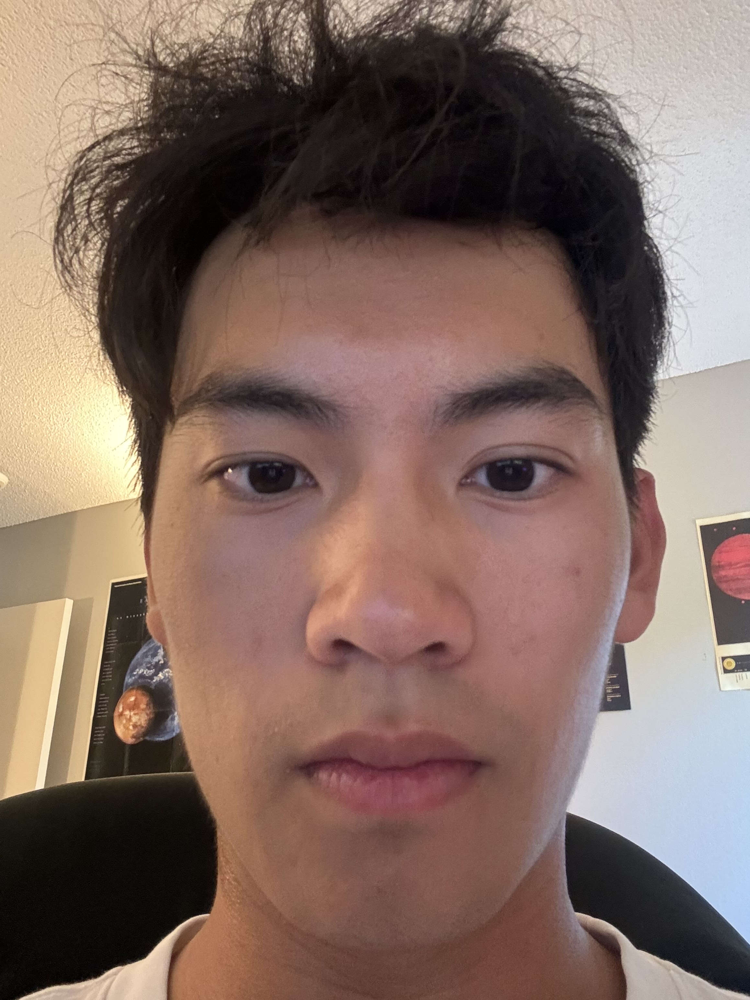
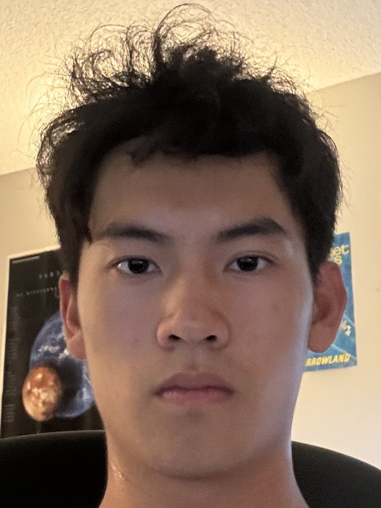

Project 0: Becoming Friends with Your Camera
Part 1: Selfie: The Wrong Way vs. The Right Way
The goal of task is to take two pictures of a face. One without zoom, and one with zoom, but standing further back

No Zoom

Zoomed in, but farther away image
Part 2: Architectural Perspective Compression
This task is the same as Part 1, but for a view of a pathway on campus. I chose the street between School of Optometry and Haas

2x Zoomed in Image

No Zoom Image after walking forward
Part 3: The Dolly Zoom
This task duplicates a film effect called the Dolly Zoom. Here is a GIF of some stuffed animals, where I am simultaneously zooming in and moving backwards

Dolly Zoom on stuffed animals